λ：
deepin 以及 deepin wine
在 windows 与 Linux 之间换来换去，已经成了我的常态。
但是国内软件并没有太多的linux版， qq 微信 企业微信 qq音乐 等等，当然在这点上， deepin 搞得 deepin-wine 功不可没，解决了大多数问题。并且可以适配到其他发行版， 这也是解决 Linux 下 简单 运行这些软件的途径之一。deepin 的贡献，当然还有搜狗拼音 和 网易云音乐 linux版（因为曲库问题，不想用）
话又说回来，那只是简单解决。由于机器本身硬件适配问题以及发行版是移植deepin-wine, 总会有一些麻烦。 比如，视频功能 就不是很好，成功的几率是真小， 由于我机器的原因，就算是用 deepin 系统也没见成功。 别的发行版跑 deepin-wine 时， 也并不稳定，概率性的崩溃，或者耗资源多， 风扇起飞
当然 deepin-wine 仍在发展， 相信以后会越来越好，你问我滋不滋瓷，我当然是滋瓷的嘛。 如果你只是为了简单用一些软件，收发消息之类的，可能deepin-wine就足够了， 没必要虚拟机了, 你可以尝试deepin 系统， 或者其他发行版下尝试deepin-wine。 地址：
deepin-wine-ubuntu github 地址
2019.10 的官方 qq linux版
推出这个版本的因素有很多， 很重要的一点是: 腾讯内部 linux(ubuntu 18.04) 入域成功了， 成为很多开发与运维的新选择， 但是对于这些软件， 遇到了同样的问题， qq 企业微信 微信 等等，工作要用到， 所以需求提上日程很正常
再就是国内 linux 下做开发的多起来， 用户人数增多。 国产 linux 也在成长， deepin 正在做 龙芯 的适配工作（看好deepin）, 所以 linux 下还是有潜在市场， 最直接的： qq 音乐 与 网易云音乐， 为了qq 音乐， 我不得不用 wine 或者 虚拟机
腾讯新出的 qq linux版， 虽然异常简陋，也不稳定…… 但这是一个好的开始，应该给点时间，要是真有心做这个工程， 一定会好起来的 （至少紧跟潮流: 扫码登录）
virtualbox
之前， Linux 下一直用着 virtualbox， 装个 win7 再开个无缝模式（就是不显示虚拟机的桌面，只显示虚拟机里的应用窗口，看起来就像与真机同在一个系统下）。 但是还是那个问题, 由于机器的原因， 摄像头是有问题的， 摄像头打开是蓝屏，不走摄像头的控制器。
而且， 对win 10 支持并不好，卡的要命。
1. 下载 vmware
直接去官网，下载最新版就好了， 要 登录 而已， 你就注册一个账号， 它又不能把你怎么样。 包括windows 下，下载 vmware 安装程序 我也是直接官网下载:
vmware 官网下载 地址
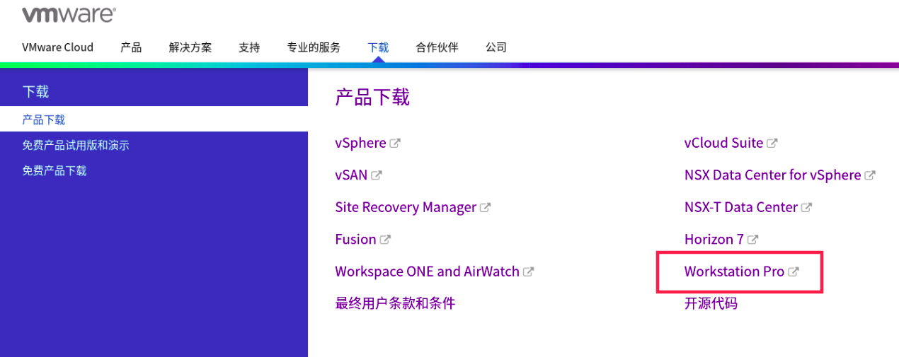
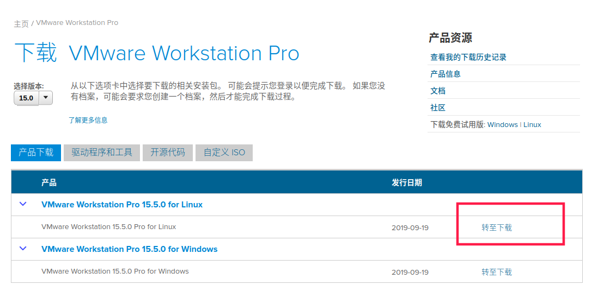
下载完成后得到：
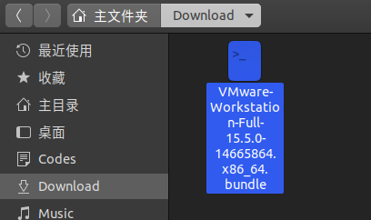
2. 安装 vmware
1 | ## 打开终端， 执行该脚本 |
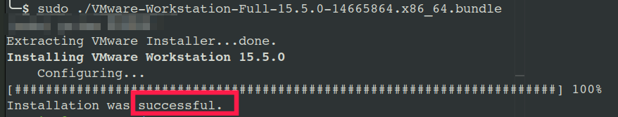
软件列表会多出 3 个：
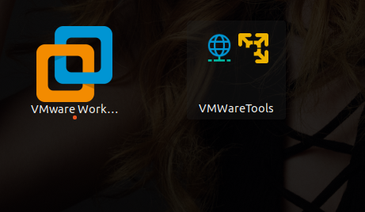
其他两个是工具， 我们只需要执行vmware Workstation
3. 首次打开
首次打开就像在 windows 下一样， 有一些诸如 是否试试获取更新， 是否加入xxx体验计划 以及 激活码 等等， 英文关键词大概就能猜出是在问什么， 根据自己习惯做选择
- 第一页，一般是协议，肯定得选
accept， 不然没法继续 - 每次启动时检测更新？
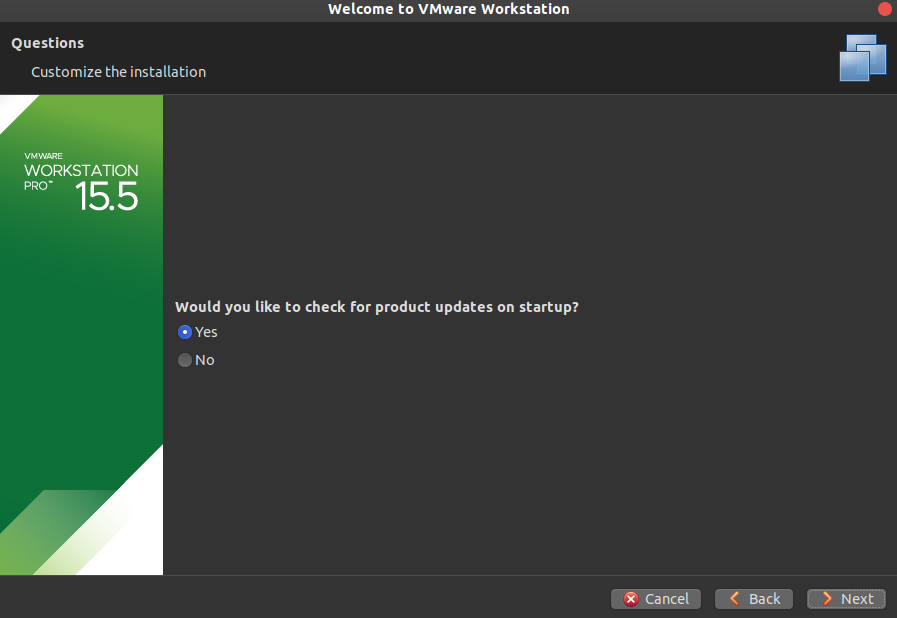 - 上传问题报告和使用记录帮助软件更好的发展（经典的用户体验计划）？
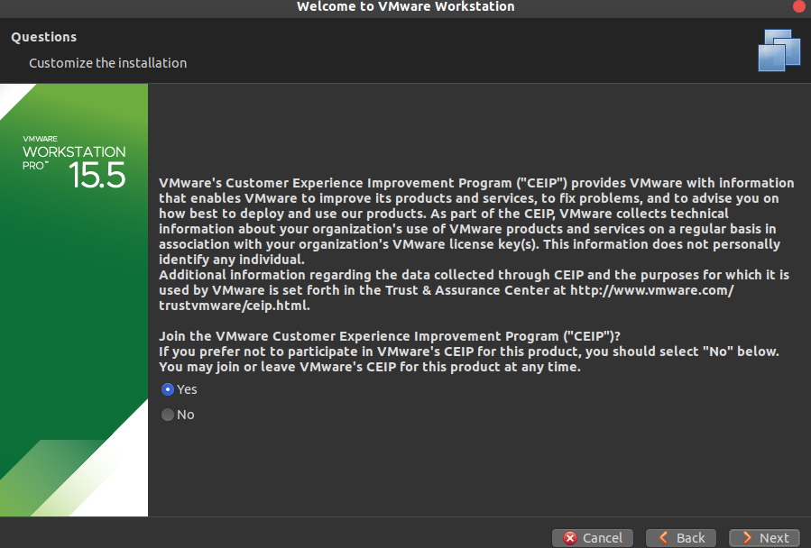 - vmware 共享主机的存放地址（手填绝对路径）：
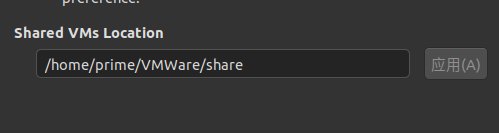 - vmware server 的用户
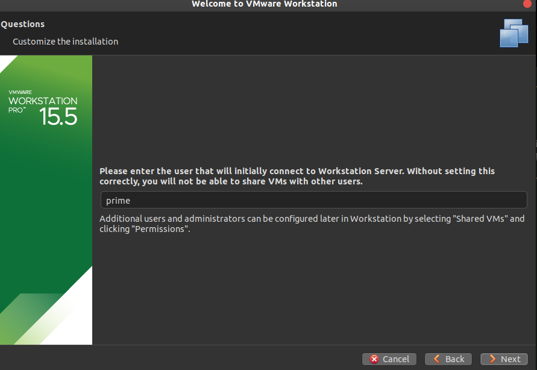 - vmware server http 端口号
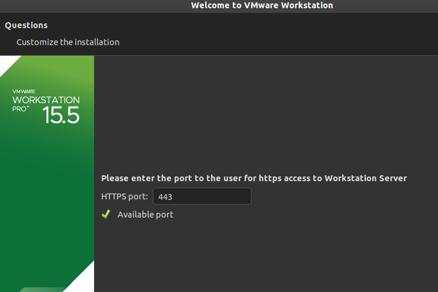 - 序列码，随便搜一个对应vmware 版本的即可：
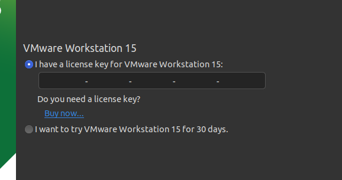
4. 安装完成
如果安装过程配置错了， 或者想修改， 打开软件设置基本都能找到
软件的使用与 windows 没什么大区别， 见机行事
5. vmare 卸载
打开上边的脚本 VMware-Workstation-Full-15.5.0-14665864.x86_64.bundle 看一下源码， 就会发现脚本可以加参数， 而且功能不仅仅基本安装。
1 | # 打开终端， 执行 -h , 显示帮助文档 |
–uninstall-component=NAME 用来卸载
如果不知道不知道NAME 该填什么，可以先空着执行一下， 然后就会有列表：
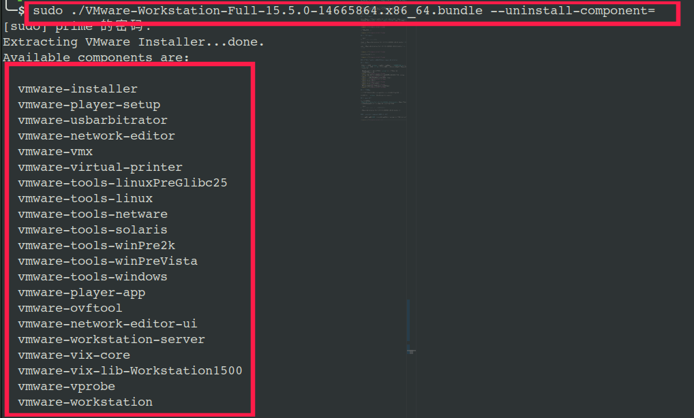
1 | # 执行卸载，简单粗暴的通配符 |